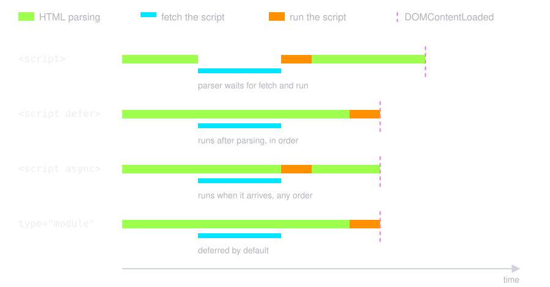
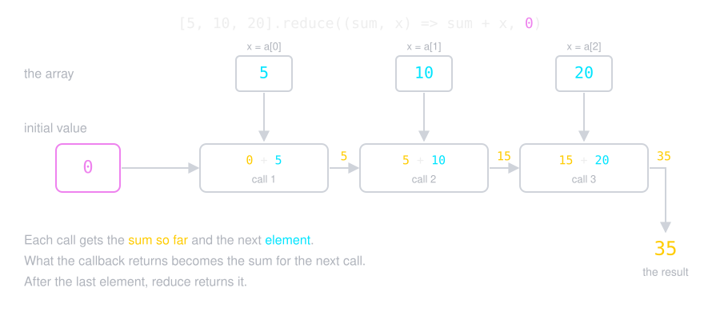
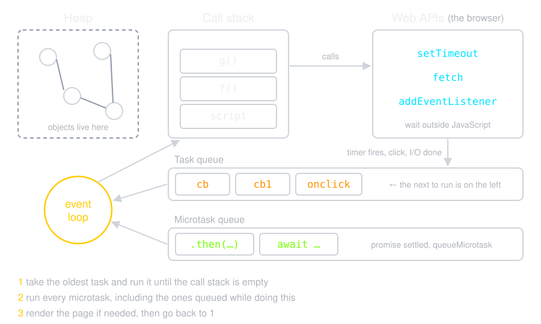
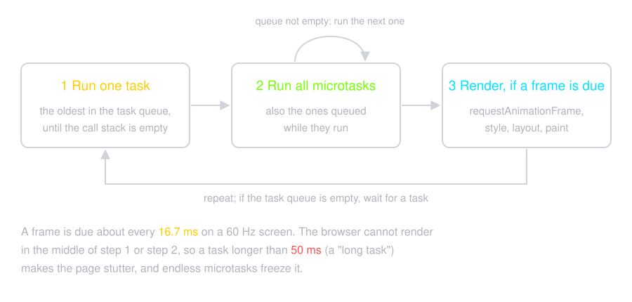
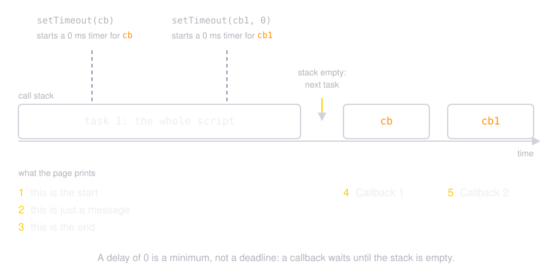
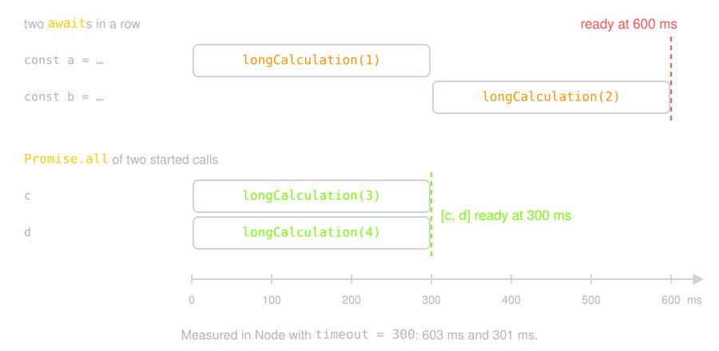
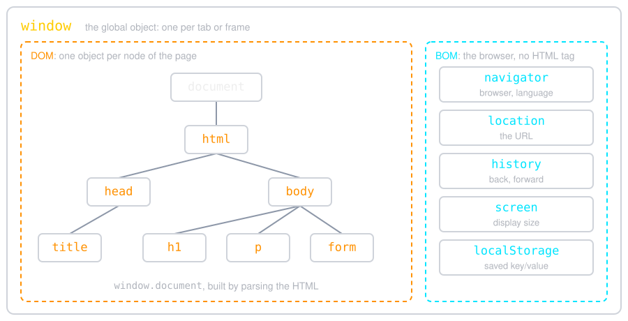
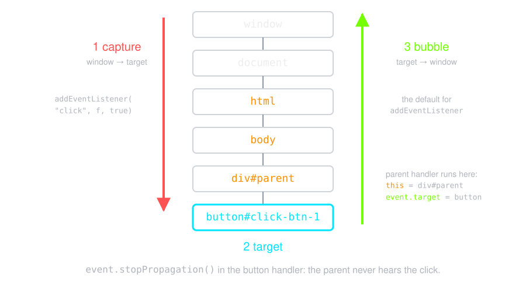

The browser runs a plain script when the parser reaches it, so the
elements after it do not exist yet
integrity: a hash, so the browser rejects
a changed file (important for scripts from a CDN)
<script> in head or body?
<head>
<script>
document.getElementById("para"); // null: the body is not parsed yet
</script>
</head>
<body>
<p id="para">Hello</p>
<script>
document.getElementById("para"); // <p id="para">
</script>
</body>
In head: it runs before the body exists, and
the page stays blank while the file downloads
At the end of body: the elements exist,
but the download starts late (the old way)
Today: in head with defer or
type="module": download early, run after the page is parsed
defer and async

defer: runs in document order, before
DOMContentLoaded. Use it for your app
async: the first to arrive runs first.
Use it for independent scripts (analytics, ads)
They need src: an inline plain script ignores them
Syntax
Very similar to C/Java (with some differences)
There is no main function
Semicolons are optional at the end of a line (most code uses them)
Variables are declared with
const, let,
or the legacy var
Use const first, and
let only when you must reassign
var is what you meet in old code
The keyword is not optional: without it, the assignment makes (or
overwrites) a global variable
i = j = 0;
function f() {
let i;
i = j = 10; // i is local, j is the global
}
f();
// i = 0, j = 10
Strict mode (later) turns this mistake into an error
Types
No type in the declaration: the value has the
type, and a variable can hold another type later
Primitives: number, string, boolean, bigint,
symbol, undefined, null. They are immutable
let x = "abc";
x[0] = "Z"; // ignored: x is still "abc"
Objects: everything else (arrays, functions,
window). They are mutable
Arguments are passed by sharing: the function
gets the same value, not a copy
function mutateArray(A) {
A[0] = 0;
}
let A = [1];
console.log(A); // [1]
mutateArray(A);
console.log(A); // [0]
function mutateNumber(n) {
n = 0;
}
let n = 1;
console.log(n); // 1
mutateNumber(n);
console.log(n); // 1
Both are passed by sharing. The array is mutable, the number is not.
function mutateArray(A) {
A = [0];
}
A = [1];
console.log(A); // [1]
mutateArray(A);
console.log(A); // [1]
Here we do not mutate the array; we bind the local name
A to a new array.
Objects can have properties and methods,
primitive values can not
const name = 'Darth Vader';
name.alignment = 'Lawful evil';
name.tellTheTruth = () => {
console.log('Luke, I am your father!');
};
console.log(name.alignment); // undefined
name.tellTheTruth(); // Uncaught TypeError: name.tellTheTruth is not a function
name.length works because JavaScript wraps the string in a
temporary wrapper object, then throws it away
with everything you put on it
Boxing: Java and JavaScript
List<Integer> list = new ArrayList<>();
list.add(5); // autoboxing: int → Integer
int x = list.get(0) + 1; // unboxing: Integer → int, x is 6
Integer a = 1000, b = 1000;
boolean same = a == b; // false: two Integer objects
boolean equal = a.equals(b); // true
"abc".length; // 3: a String box is made, then thrown away
(5).toFixed(2); // "5.00": the same with a Number box
typeof Object("abc"); // "object": a box you keep
Object("abc") + "d"; // "abcd": unboxing with valueOf()
new Boolean(false) ? "yes" : "no"; // "yes": every object is truthy
Java boxes a primitive when it goes where
an object is expected (collections, generics), and the box stays
JavaScript boxes it only to read a
property or call a method, and the box is temporary
Never write new Number() or new Boolean()
Scope
var is
function scoped;
let and
const are
block scoped (ES2015)
function f() {
if (true) {
var a = 20;
let b = 30;
}
console.log(a); // 20: var ignores the block
console.log(typeof b); // "undefined": let stays in the block
}
Operators & Control Flow
Arithmetic: + - * / % ** (+ also joins strings)
Assignment: = += -= *= /= %= ++ --
Comparison: == === != !== > >= < <=
2 == "2" is true (it converts),
2 === "2" is false. Use
===
Logical: && || !
if/else, switch, ? :,
while, for, do-while,
break, continue: the same as C
Functions
console.log(square(5)); // 25
function square(y) {
return y * y;
}
No parameter types, no return type
Declarations are hoisted: you can call a
function before the line that defines it
A function can be defined inside another function
Functions are Values
const add = function (a, b) {
return a + b;
};
// arrow function
const add2 = (a, b) => {
return a + b;
};
// one expression: no braces, no return
const sq = (x) => x * x;
const zero = () => 0;
// pass a function to another function
[1, 2, 3].map(sq); // [1, 4, 9]
Input & Output
Dialogs (they block the page until the user answers)
let input = prompt("Please enter your name"); // a string, or null
let ok = confirm("Do you want to continue?"); // true or false
alert("We study 'Internet Engineering'");
prompt returns a string: Number.parseInt("10"),
Number.parseFloat("20.2")
console.log() for the developer; the DOM (later) for the user
document.write:
do not use it. After the page loads, it
erases the whole document
Arrays
Neither the length nor the element types are fixed
const a = [1, 2, 3]; // a literal
const b = new Array(10, 20, 30); // the same with the constructor
const mixed = [1, "two", { three: 3 }];
const c = [];
c[10] = "HTML";
c[120] = "JS";
console.log(c.length); // 121: the gaps are "holes"
let friends = ["Saman", "Sepehr", "Hessam"];
friends.length // 3
friends.push("Ali") // 4
friends.concat("Ali") // ["Saman", "Sepehr", "Hessam", "Ali", "Ali"]
let last = friends.pop() // "Ali"
friends.map(i => i.toUpperCase()) // ["SAMAN", "SEPEHR", "HESSAM"]
friends.filter(i => i.startsWith("S")) // ["Saman", "Sepehr"]
let num = [1, 2, 3, 4, 5, 6, 7, 8, 9];
num.reduce((sum, i) => sum + i, 0) // 45
// for/of: loop over the values
for (const friend of friends) {
console.log(friend);
}
How reduce Works

sum + x, 0). The initial value 0 and the element 5 go into call 1, which returns 5. 5 and 10 go into call 2, which returns 15. 15 and 20 go into call 3, which returns 35, the result. Each call gets the sum so far and the next element, and what it returns becomes the sum for the next call"
width="860"
/>
More reduce
// no initial value: the first element is the start
[5, 10, 20].reduce((sum, x) => sum + x); // 35
// TypeError: Reduce of empty array with no initial value
[].reduce((sum, x) => sum + x);
[].reduce((sum, x) => sum + x, 0); // 0
// the result can be any type: count the words
const words = ["js", "css", "js", "html", "js"];
words.reduce((count, w) => {
count[w] = (count[w] ?? 0) + 1;
return count;
}, {}); // { js: 3, css: 1, html: 1 }
Always give the initial value; then an
empty array is safe
Math, Number & Date
Math.max(3, 7) // 7
Math.floor(2.7) // 2
Math.random() // 0 <= x < 1
(3.14159).toFixed(2) // "3.14"
(1.1).toExponential() // "1.1e+0"
Number("12px") // NaN
Number.parseInt("12px") // 12
const d = new Date();
d.toString();
d.getFullYear(); // also Month, Date, Hours, ... and the set... methods
d.toString() in this browser, now:
Object
An object is a collection of properties: values (fields) and functions
(methods)
let book = {
name: "OOP in JS",
price: 100,
publish: 2020,
getPrice() {
return this.price;
},
};
book.setPrice = function (x) { this.price = x; };
book.setPrice(1000);
console.log(`name is ${book.name}, price is ${book.getPrice()}`);
delete book.publish;
Getters & Setters
let book = {
name: "OOP in JS",
_price: 0,
get price() {
return this._price + "$";
},
set price(val) {
if (val < 0) {
console.log("Invalid price");
return;
}
this._price = val;
},
};
book.price = 1000; // price is 1000$
book.price = -100; // "Invalid price", still 1000$
book._price = -100; // price is -100$: the field is not private
Prototype
Object.create(proto): a new object that
uses proto as its prototype
// Person is our prototype
let Person = {
_name: "",
_family: "",
get name() { return this._name; },
get family() { return this._family; },
set name(name) { this._name = name; },
set family(family) { this._family = family; },
};
// p1 is an instance based on Person prototype
let p1 = Object.create(Person);
p1.name = "Parham";
p1.family = "Alvani";
console.log(p1.name, p1.family);
Prototypes are how JavaScript objects inherit features from one another.
Constructor Functions
function Person(first, last, age, gender, interests) {
this.name = { first, last };
this.age = age;
this.gender = gender;
this.interests = interests;
}
let person1 = new Person('Tammi', 'Smith', 32, 'neutral', ['music', 'skiing', 'kickboxing']);
Person.prototype.farewell = function() {
alert(this.name.first + ' has left the building. Bye for now!');
};
new Person(...) makes an object linked to
Person.prototype, then runs
Person with this = the new
object
person1.farewell() works, although we added it after
person1 was made
Classes
class (ES2015) is new syntax for the same
prototypes: typeof Student is "function"
class Student {
constructor(name, id) {
this.name = name;
this.id = id;
}
// a method: no "function" keyword
toString() {
return `${this.name}: ${this.id}`;
}
}
const s = new Student("Parham Alvani", "9231058");
console.log(`${s}`); // Parham Alvani: 9231058
Prefix the name with # (ES2022, supported
everywhere)
class Student {
name; // public field
#id; // private field — not reachable from outside
constructor(name, id) {
this.name = name;
this.#id = id;
}
#check() { // private method
return this.#id.length === 7;
}
get id() {
return this.#check() ? this.#id : "invalid";
}
}
const s = new Student("Parham", "9231058");
s.#id; // SyntaxError: Private field '#id' must be declared in an enclosing class
There is no protected in JavaScript
Strict Mode
"use strict"; at the top of a script or a
function turns silent mistakes into errors
a variable without a declaration
two parameters with the same name
a write to a read-only property
Modules and classes are always strict
"use strict";
myFunction();
function myFunction() {
y = 3.14; // ReferenceError: y is not defined
}
Concurrency model and the event loop
JavaScript runs on one thread with
one call stack: only one function runs at
a time
The browser does the waiting on other
threads: timers, network, user input
When a wait is over, the browser puts a callback in a queue
The event loop takes callbacks from
the queues and runs them, one at a time

One Turn of the Loop

Event Loop
// pseudocode: what the browser does
while (true) {
const task = taskQueue.takeOldest(); // waits if the queue is empty
run(task); // to completion
while (microtaskQueue.length > 0) {
run(microtaskQueue.takeOldest()); // all of them
}
if (frameIsDue()) render(); // rAF, style, layout, paint
}
Each task runs to completion before the
next one starts
Good: a function is never interrupted in
the middle, so no other code changes its data
Bad: a task that takes
too long freezes the page: no clicks, no
scroll
Tasks and Microtasks
Task
Microtask
Made by
a <script>, setTimeout,
setInterval, events (click, key, load)
.then / .catch / .finally, the
code after await, queueMicrotask
Runs
one in each turn of the loop
all of them, after each task, before rendering
Danger
a long task stops rendering and input
a microtask that always adds a new one never lets a task run
The script first (an async function runs until its first
await), then the microtasks in order, then the task
Zero Delays
let el = document.getElementById("event-loop");
let print = (text) => el.append(text, document.createElement("br"));
print("this is the start");
setTimeout(function cb() {
print("Callback 1: this is a msg from call back");
}); // has a default time value of 0
print("this is just a message");
setTimeout(function cb1() {
print("Callback 2: this is a msg from call back");
}, 0);
print("this is the end");

Non-blocking I/O
The event loop does not block on I/O: a
fetch or a timer is handed to the browser, and its callback
joins a queue when the result is ready. Meanwhile the page still handles
clicks and input.
async function loadUsers() {
const res = await fetch("https://jsonplaceholder.typicode.com/users");
return res.json(); // other tasks ran while we waited
}
Your own code does block: a long synchronous
loop or alert() holds the only thread, and nothing else
runs (no clicks, no rendering) until it returns.
const end = Date.now() + 3000;
while (Date.now() < end) {} // the page is frozen for 3 s
Try It: Block the Loop
const frames = document.getElementById("frames");
const block = document.getElementById("block");
let n = 0;
function tick() {
frames.textContent = ++n; // one frame, one number
requestAnimationFrame(tick);
}
requestAnimationFrame(tick);
block.addEventListener("click", () => {
const end = Date.now() + 2000;
while (Date.now() < end) {} // no frame can render
});
Frames: 0
Heavy work belongs in a Web Worker: a
second thread with its own event loop and no DOM
Promise
A Promise is the future result of an
asynchronous operation
It is in one of three states:
pending: not finished yet
fulfilled: finished with a value
rejected: failed with a reason (an error)
.then(f) runs f on the value;
.catch(f) runs f on the error
async function run() {
const first = await longCalculation(1);
console.log(`1st promise: ${first}`);
const second = await longCalculation(2);
console.log(`2nd promise: ${second}`);
const third = await longCalculation(3);
console.log(`3rd promise: ${third}`);
}
The same promises, written like sequential code
await pauses only this function, never
the browser
An async function
always returns a promise
Errors
A rejected promise becomes a thrown exception, so ordinary
try/catch works
async function load() {
try {
const response = await fetch("https://swapi.dev/api/people/1/");
if (!response.ok) {
throw new Error(`unexpected status: ${response.status}`);
}
return await response.json();
} catch (error) {
console.error(error);
}
}
Waiting in Parallel
Two awaits in a row run
one after the other
When the calls do not depend on each other, start them first and await
together
// 600ms: the second starts only after the first resolves
const a = await longCalculation(1);
const b = await longCalculation(2);
// 300ms: both are already running
const [c, d] = await Promise.all([longCalculation(3), longCalculation(4)]);

Modules
Scripts share one global scope, so every name can collide with every
other file
A module has its own scope, and states
what it exposes and what it needs
A proposal joins the next June edition when it reaches
stage 4 at TC39. Every sample in this part was run in Chrome 157.
Optional Chaining
Reading a property of undefined throws, so
deep access needs a guard at every level
?. stops and evaluates to
undefined instead of throwing
// before
const city1 = user && user.address && user.address.city;
// after
const city2 = user?.address?.city;
Nullish Coalescing
|| replaces every falsy value,
which eats 0 and the empty string
?? only replaces null and
undefined
const count = 0;
count || 10; // 10, almost certainly a bug
count ?? 10; // 0, the value we actually have
Arrays Without Mutation
const scores = [17, 12, 19, 15];
scores.at(-1); // 15: negative counts from the end
scores.toSorted((a, b) => a - b); // [12, 15, 17, 19]
scores.toReversed(); // [15, 19, 12, 17]
scores.with(1, 20); // [17, 20, 19, 15]
scores; // [17, 12, 19, 15]: unchanged
scores.findLast((s) => s < 16); // 15
const students = [
{ name: "Sara", grade: "A" },
{ name: "Reza", grade: "B" },
{ name: "Nima", grade: "A" },
];
Object.groupBy(students, (s) => s.grade);
// { A: [Sara, Nima], B: [Reza] }
sort and
reverse change the array; the
to... versions return a copy
Sets & Iterators
const frontend = new Set(["js", "css", "html"]);
const backend = new Set(["js", "go", "sql"]);
frontend.union(backend); // {js, css, html, go, sql}
frontend.intersection(backend); // {js}
frontend.difference(backend); // {css, html}
// an endless generator: 1, 2, 3, ...
function* naturals() {
let n = 1;
while (true) yield n++;
}
naturals()
.filter((n) => n % 2 === 0)
.map((n) => n * n)
.take(3)
.toArray(); // [4, 16, 36]
Iterator helpers are lazy: they compute only the
values that take asks for
ES2026
// Map upsert: read the value, or insert a default first
const counts = new Map();
for (const word of ["go", "js", "go"]) {
counts.set(word, counts.getOrInsert(word, 0) + 1);
}
counts; // Map { "go" => 2, "js" => 1 }
[1e20, 0.1, -1e20].reduce((a, b) => a + b); // 0
Math.sumPrecise([1e20, 0.1, -1e20]); // 0.1
Error.isError(new TypeError("x")); // true
Error.isError({ message: "fake" }); // false
const bytes = new TextEncoder().encode("Hi!");
bytes.toBase64(); // "SGkh"
bytes.toHex(); // "486921"
Uint8Array.fromBase64("SGkh"); // the same 3 bytes
Iterator.concat([1, 2], new Set([3])).toArray(); // [1, 2, 3]
Coming in ES2027
// Temporal: dates without the Date bugs
const day = Temporal.PlainDate.from("2026-11-07");
day.add({ days: 30 }).toString(); // "2026-12-07"
day.dayOfWeek; // 6 (Saturday; Monday is 1)
day.until("2027-01-01").days; // 55
const lecture = Temporal.ZonedDateTime.from("2026-11-07T07:45[Asia/Tehran]");
lecture.withTimeZone("Europe/Berlin").toString();
// "2026-11-07T05:15:00+01:00[Europe/Berlin]"
// using: clean up at the end of the block, also on an error
{
using res = { [Symbol.dispose]() { console.log("closed"); } };
console.log("working");
} // prints "working", then "closed"
Both are finished, and Chrome runs them. Check
caniuse before you depend on
them in every browser
JavaScript in Web
The main job of JS in the web: dynamic pages
Create and delete HTML elements
Change their content and their styles
Question: How to access HTML elements from JavaScript?
Answer: DOM
The browser parses the HTML document
The output is a tree of objects called the "DOM"
The browser gives an API to read and change the DOM
DOM
Document Object Model: each HTML element is an
object in a tree that follows the tag hierarchy
Each object has
properties for the HTML attributes (not all
of them)
methods and handlers for actions and
events
Other objects (the BOM) belong to the browser and have no tag; e.g.,
window is the browser window

Finding Elements
querySelector("css")
the first match, or null
querySelectorAll("css")
a static NodeList of all matches
document.getElementById("id")
the element with that id, or null
getElementsByClassName, ...ByTagName
a liveHTMLCollection
Call them on document, or on an element to search only its
sub-tree (getElementById is only on document)
The element must already exist: the browser reads the HTML file
top to bottom
HTMLCollection and
NodeList are
not arrays: no map, no
filter. Convert first
const items = Array.from(document.getElementsByClassName("testbox"));
items.map((el) => el.textContent);
// querySelectorAll returns a NodeList, which does have forEach
document.querySelectorAll(".testbox").forEach((el) => console.log(el));
Access to DOM Objects Example
<div id="box1">
<div class="testbox">
document.querySelector("#box1").textContent = "I am the new message";
let da = document.getElementsByClassName("testbox");
da[0].textContent = "I am another new message";
Element Properties
el.textContent
the text; safe for user input
el.innerHTML
parses the string as HTML and replaces all children. Never with user
input (XSS, lecture 11)
el.classList.add("x")
also remove, toggle, contains
el.style.backgroundColor
the inline style
el.value
the value of a form field
el.children, el.parentElement
move through the tree
CSS & JavaScript
Each element has a style object
CSS property names become camelCase:
background-color → backgroundColor
element.style.backgroundColor = "red";
A better way: keep the styles in CSS and change the class with
classList
CSS & JavaScript Example
let color;
index = prompt("Enter 1 for blue, 2 for red, 3 for green");
switch(parseInt(index)) {
case 1:
color = "blue"; break;
case 2:
color = "red"; break;
case 3:
color = "green"; break;
default:
color = "black"; break;
}
document.getElementById("colorBox").style.backgroundColor = color;
Events
Why would a page change? Because an
event happened
The user does something; e.g., clicks a button
A timer fires; e.g., check for new emails
New data comes from the server; e.g., a chat message
The browser knows what happened, and
calls the functions that are registered for that event
So JS has to register a function (a
handler) for the event
Registering a Handler
<!-- 1. an HTML attribute -->
<button onclick="hello()">Hi</button>
// 2. a DOM property: only one handler
button.onclick = hello;
// 3. addEventListener: many handlers, and you can remove them
button.addEventListener("click", hello);
button.removeEventListener("click", hello);
Some common events (the attribute is on + the name):
<button id="r">Red</button>
<button id="b">Blue</button>
<button onclick="this.style.backgroundColor =
this.innerHTML;">Green</button>
<!-- how we can fix this? -->
<button onclick="setBgColor3();">Black</button>
<button onclick="setBgColor3.bind(this)();">Black</button>
Dynamic Event Handler Example
function blueClick1() {
alert("You have clicked on me!!!");
}
function blueClick2() {
alert("Yahoooo!!!!");
}
function AddEventHandler() {
let blueButton = document.getElementById("blueButton");
blueButton.addEventListener("click", blueClick1);
blueButton.addEventListener("click", blueClick2);
}
function RemoveEventHandler() {
let blueButton = document.getElementById("blueButton");
blueButton.removeEventListener("click", blueClick1);
}
Event Propagation & the event object
What happen if both parent and child handle the same event?!
The event is said to propagate outward, from the node where it
happened to that node’s parent node and on to the root of the
document.
By default, the event object is passed to all event handler
At any point, an event handler can call the
stopPropagation method on the event
object to prevent handlers further up from receiving the event.
<div id="parent" style="border: solid">
I am parent <br />
<button id="click-btn-1">click me</button>
</div>
// counter have been declared before
counter = 0;
function childHandler(event) {
window.alert("child handler");
counter++;
// add message to the event
event.message = `You have clicked me ${counter} times`;
}
document
.getElementById("click-btn-1")
.addEventListener("click", childHandler);
document.getElementById("parent").addEventListener("click", (event) => {
window.alert(
`child message that is added into event: ${
event.message ?? "use clickme button"
}`
);
});
I am parent

event.target vs.
this
event.target: the element where the event
happened (the button you clicked)
this (and
event.currentTarget): the element the listener is attached
to (the parent, during bubbling)
event.type: the name of the event.
Case-sensitive —
addEventListener("Click", …) never fires
In an HTML attribute, the event object is in a variable named
event
Application 1: Dynamic Element Generation
const p = document.createElement("p");
p.textContent = "I am a new paragraph";
p.setAttribute("id", "newp1"); // or: p.id = "newp1"
parent.append(p); // add as the last child
parent.prepend(p); // move it to be the first child
p.replaceWith(other); // put another node in its place
other.remove(); // delete it from the page
In old code: appendChild, insertBefore,
replaceChild, removeChild on the parent
Content Generation Example
let id = 0;
function addNewP() {
id++;
let parent = document.getElementById("main");
let newp = document.createElement("p");
newp.id = "newp" + id;
newp.textContent = "I am new paragraph";
parent.append(newp);
}
let replace = 0;
function replaceNewP() {
replace++;
if (replace <= id) {
let newp = document.getElementById("newp" + replace);
let newer = document.createElement("span");
newer.style.borderStyle = "solid";
newer.textContent = "I replace the new paragraph";
newp.replaceWith(newer);
} else {
replace = id;
}
}
Application 2: Form Validation
One of the major applications of JavaScript:
Form Validation
To check input data correctness before submitting to server
To save bandwidth, time, and server load
Note: Data cannot be validated
completely in client-side
The server must validate again, because
a client can send any request
In client side we check
format (pattern/syntax), e.g. a date pattern
or a password length
Steps:
Read the input
Check the format/pattern (by regular expression)
Don't allow to submit if there is an error
Form Validation in JavaScript
At first, we should access to input (form) data, then validate
For text,
password, and
textarea
The input text is accessible via .value of
the corresponding object
For select
The value of selected option is given by
SelectObject.value
With multiple,
.value is only the
first one: use
.selectedOptions
For checkbox and
radio
They are separate inputs that share one
name:
document.getElementsByName(name)
.checked == true is selected
The value of the selected one is given by its
.value
Reading Many Values
const form = document.forms.profile;
// <select name="colors" multiple>, Red (r) and Blue (b) selected
form.colors.value; // "r", only the first
Array.from(form.colors.selectedOptions, (o) => o.value); // ["r", "b"]
// checkboxes named "os", Linux and Mac checked
new FormData(form).getAll("os"); // ["Linux", "Mac"]
new FormData(form).get("os"); // "Linux", only the first
// radio buttons named "grade": the checked one
form.elements.grade.value; // "M"
// the same pairs the browser sends on submit
new URLSearchParams(new FormData(form)).toString();
// "colors=r&colors=b&os=Linux&os=Mac&grade=M"
FormData collects the form the way the
browser does, so one name can have many values
Regular Expressions
/^\d{4}$/.test("2026"); // true or false
"a1b22".match(/\d+/g); // ["1", "22"]
c*
≥ 0 of c
c+
≥ 1 of c
c?
0 or 1 of c
c{x}
x times of c
.
A char (no new line)
c1|c2
c1 or c2
[abc]
One of the given characters
[^abc]
One character that is not given
\d
A digit
\D
Every thing except digits
^c
Beginning match
c$
End match
// anchored: the whole string must match
let anchored = /^ab*c+d{3}z$/;
// "acz": False
// "abbccdddz": True
// "ffabbccdddz": False
// unanchored: a match anywhere in the string is enough
let anywhere = /ab*c+d{3}z/;
// "abbccdddz": True
// "ffabbccdddz": True
// "ffabbccdddzggg": True
// To match Date format:
let dateRegex = /^\d{4}\/\d{1,2}\/\d{1,2}$/
Valid Form Submission
function checkpassword(event) {
const p1 = document.passwordform.password.value;
const p2 = document.passwordform.repassword.value;
if (p1.length < 6) {
alert("Password is too short, re-enter");
event.preventDefault();
} else if (p1 !== p2) {
alert("The two passwords do not match");
event.preventDefault();
}
// otherwise the browser goes ahead and submits
}
document.getElementsByName("passwordform")[0].onsubmit = checkpassword;
Event.preventDefault
Stop the browser's default action for the
event: submit a form, follow a link, toggle a checkbox
const box = document.querySelector("#id-checkbox");
box.addEventListener("click", (event) => {
event.preventDefault(); // the box does not toggle
document.getElementById("output-box").append(
"Sorry! preventDefault() won't let you check this!",
document.createElement("br"),
);
});
Please click on the checkbox control.
HTML Validator
The browser checks type,
required,
min /
max and
pattern before it submits
// add or replace one cookie
document.cookie = "theme=dark; max-age=31536000; path=/";
// read: all the cookies of this page in one string
document.cookie; // "theme=dark; lang=fa"
The browser sends the cookies to the server
with every request, also the ones JS set
JS can not see cookies with the
HttpOnly attribute: this protects session
cookies from XSS
localStorage: no expiration date, one store
per origin
sessionStorage: the same API, deleted when
the user closes the tab
It is not sent to the server
Application 6: Fetch
fetch(url, options) sends an HTTP request
and returns a Promise of the
Response
It resolves for every HTTP answer, also 404 and 500: check
response.ok (status 200–299)
It rejects with a TypeError only when there
is no answer: a network error, or a CORS block
const response = await fetch("https://jsonplaceholder.typicode.com/users/1");
if (!response.ok) {
throw new Error(`HTTP ${response.status}`);
}
const user = await response.json(); // the body, parsed
console.log(user.name); // "Leanne Graham"
function swapiExec() {
fetch("https://swapi.dev/api/people/1/")
.then((resp) => resp.json())
.then(
(data) =>
(document.getElementById(
"swapi-result"
).textContent = JSON.stringify(data))
)
.catch(
(err) =>
(document.getElementById("swapi-result").textContent =
`could not reach the web service: ${err.message}`)
);
}
Waiting...
function fetchWithErr(url) {
const out = document.getElementById("errMessage");
const print = (text) => out.append(text, document.createElement("br"));
fetch(url)
.then((response) => {
if (!response.ok) {
throw new Error(`HTTP status ${response.status}`);
}
return response.text();
})
.then((content) => print(`Success: ${content}`))
.catch((error) => print(`Failed: ${error}`));
}
JavaScript in Action with an Email Client
Show each new email
createElement, append
Check the address when composing
/regex/.test(input.value)
Check for new emails every minute
setInterval + fetch
Hide the side panel on a small window
window.innerWidth (or a CSS media query)
Go to another page
location.href = ...
Remember the theme
localStorage
Stay logged in
a session cookie (set by the server, HttpOnly)
Debugging 🐛
Browser DevTools (F12): Elements shows the live DOM,
Console runs code, Network shows the requests
console.log()/info()/warn()/error()/table()
Sources: breakpoints, or a
debugger;
statement in the code
Best Practices
const and let, never a global by accident
Use ===
Beware of automatic type conversions
textContent, not innerHTML, for user data
Warnings ⚠️
JavaScript is a big, complex language
It's easy to get started in JavaScript, but if you need to use it
heavily, must invest more time in learning it well
Browsers do not all support the newest features at the same time: check
caniuse
this is a bit confusing!
this refers to whatever the function was called
on, not to where it was written — inside a plain function call
it is undefined in strict mode and modules, and the
window object otherwise
What next?!
Libraries: D3, Lodash, Zod, TanStack Query, ...
Frameworks: React, Vue, Svelte, Angular, Solid, ... and on top of them
Next.js, Nuxt, SvelteKit, Astro
Server-side: Node.js, Deno, Bun with Express, Fastify, Hono, Socket.IO
TypeScript: JavaScript with static types,
compiled into JavaScript. Safer in large applications
WebAssembly: run C, C++, Rust, Go, ... in the
browser at near-native speed
![Two runtimes side by side. Chrome holds the V8 engine (parse, bytecode, JIT machine code; heap, call stack, garbage collector; only ECMAScript such as Array, Promise and JSON), the host APIs document, window, fetch, setTimeout, localStorage, alert and addEventListener, and an event loop from the HTML standard. Node.js holds the same V8 engine, the host APIs fs, http, process, Buffer, fetch, setTimeout and require, and an event loop from libuv. document does not exist in Node.js, and fs does not exist in the browser](./img/runtime.svg)